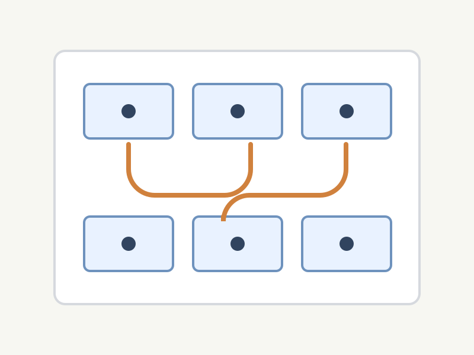
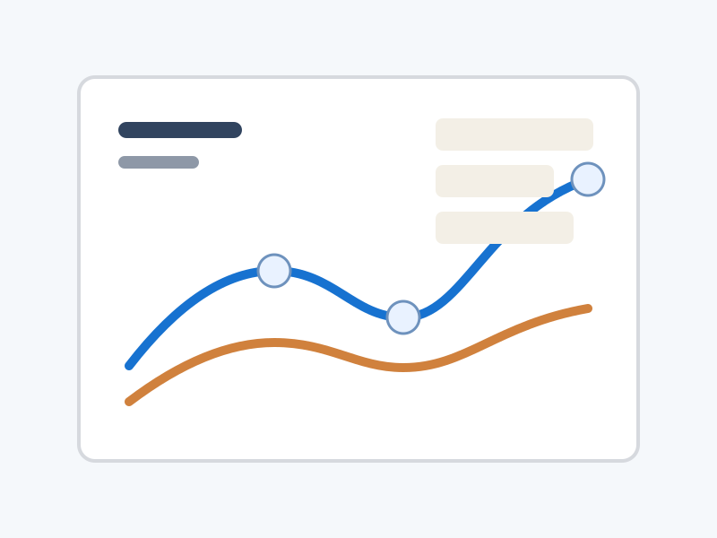

News
-
I have completed my undergraduate thesis defense!
-
One paper is conditionally accepted to OSDI 2026.
Research
I'm now devoting myself to Hardware-Software Co-Design, and have interests in ML Systems. Some papers are highlighted.

Liujia Li, Jinhao Guo, Yi Fan, Jianyu Wu,
Zhenlin Wang, Jie Zhang, Yuval Tamir, Xiaolin Wang, Yingwei Luo,
Diyu Zhou
OSDI 2026
paper
An adaptive cache eviction algorithm that uses fine-grained
characterization to improve eviction decisions under diverse
workload behavior.

Liujia Li, Yuanlong Li, Yiming Yao, Jianyu Wu, Yi Fan,
Jinhao Guo, Liren Zhu, Jie Zhang, Xiaolin Wang,
Yingwei Luo, Zhenlin Wang, Diyu Zhou
DAC 2026
paper
A fine-grained cache partitioning system that coordinates cache
allocation across both spatial and temporal dimensions.
Experience
- 2026-now Ph.D. student at Peking University
- 2022-2026 Undergraduate at Peking University
Miscellaneous
Outside research, I like playing basketball, enjoying trips, and take photos to record my life.
Gallery